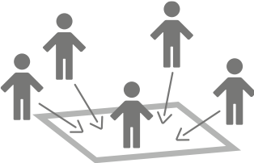

What is cocosoco
cocosoco is a video chat app whose name translates to “here and there” in English.
In this app, there is a pointing function, which can be used to point to a space with demonstrative words, which is not possible in a conventional video chat app. It is designed to make it easier to share a space to encourage
dialogue, even online, and to increase the sense of presence as if we were chatting in the same physical place.


Features of cocosoco

Pointing
You can communicate using demonstrative words such as "here" and "there" while sharing a space.

Map Display
Sharing a live stream and location map at the same time provides a subjective viewpoint and a bird’s-eye view.

Zoom
When a presenter who shares a live stream zooms the screen by pinching out, the live stream video is also zoomed.

Like
Long-pressing the display shows a heart mark to indicate “like” or “Uh-huh” as a reaction.